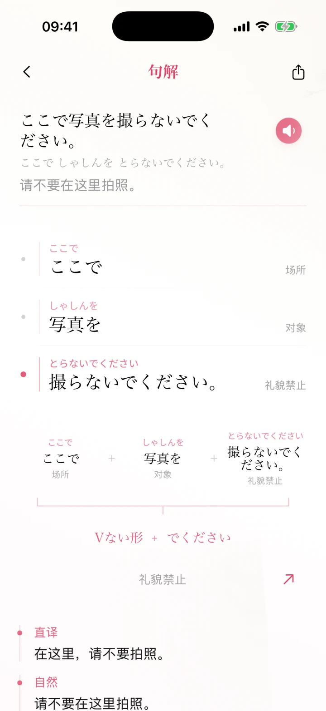

原句与短语，一起阅读
日语、假名、短语关系与中文含义沿同一页展开；点选短语查看对应结构，不必在多张解释卡之间来回切换。

Read, connect, understand
本地分词和已审核规则帮助你开始。想进一步理解时，可选择自己配置的在线 AI 辅助。
日语、假名、短语关系与中文含义沿同一页展开；点选短语查看对应结构，不必在多张解释卡之间来回切换。
无需 API Key 即可使用本地分词和已审核语法规则。匹配不到确定语法时，保留分词结果，不强行下结论。
配置 DeepSeek 或 OpenAI 后，可补充句子解释。不可用时继续显示本地结果；本地已确认的语法不会被在线结果移除。
从详情进入已审核的关联学习点，理解相近表达的差别。打开分析本身不会自动收藏或改变复习记录。